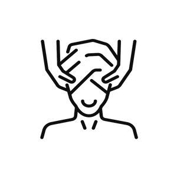

Навчання "Косметологія"
- Косметологія як наука. Історія її виникнення
- Основи анатомії та фізіології людини
- Основи дерматовенерології, шкірні хвороби
- Санітарія й гігієна
- Апаратна косметологія
- Косметичний масаж
- Пілінги
- Гігієнічна чистка обличчя
- Маски
- Засоби, сировини та їх використання в косметології:
- Протоколи проведення косметичних процедур
Для кого
- Для початківців (без медичної освіти);
- Для спеціалістів із середньою медичною освітою;
- Для спеціалістів із вищою медичною освітою;
- Для практикуючих лікарів, які хочуть підвищити рівень своєї кваліфікації;
Необхідні документи для навчання
- копія паспорта 1,2 сторінка
- прописка
- індифікаційний код
- санітарна книжка
Для навчання по ін’єкційних технологіях
- копія паспорта 1,2 сторінка
- прописка
- індифікаційний код
- санітарна книжка
- копія диплому медичного працівника

Переваги
- Сертифікат українською та англійською мовою з індивідуальним кодом учня, печаткою та голограмою;
- Додаток до диплому;
- Рекомендаційний лист для подальшого працевлаштування;
- Навчання проводиться в спеціально облаштованих професійних косметологічних кабінетах з численною апаратурою;
- Навчальний центр надає повний спектр професійної косметики світових
брендів
( MARZIA, KADIR, KRISTINA, ESTEDERM, GENOSYS та ін.).
Косметика входить в оплату за курс навчання, додаткової оплати не потребується; - Відпрацювання практичних навиків проводиться на моделях. Кожне заняття складається з теоретичної та обов’язкової практичної частини;
- 100% гарантія постановки руки з подальшою підтримкою та порадами учням після закінчення навчання.
Основи анатомії та фізіології людини
- будова та функції шкіри;
- біохімія та фізіологія шкіри;
- типи шкіри та догляд за шкірою різних типів;
- методи обстеження в дермато-косметології;
- вікові аспекти шкіри та фізіологічні основи старіння;
- причини, прояви старіння та шляхи їх корекції;
- методи оцінки функціонального стану шкіри;
- естетичні недоліки шкіри та шляхи їх усунення;
- поняття фототипів шкіри;
- розлади пігментації шкіри;
- методи корекції дефектів шкіри;
- хірургічна косметична допомога;
- можливі ускладнення.
Основи дерматовенерології, шкірні хвороби
- первинні та вторинні морфологічні елементи;
- себорея;
- вугрова хвороба;
- рожеві вугрі;
- демодекоз;
- дерматити, токсикодермії;
- атопічний дерматит;
- екзема;
- гноячкові захворювання шкіри;
- паразитарні ураження шкіри;
- грибкові захворювання шкіри;
- вірусні ураження шкіри;
- ураження шкіри при колагенозах, та фото- дерматозах;
- псоріаз, червоний плоский лишай;
- вітіліго;
- заразні хвороби шкіри, шкірні прояви венеричних хвороб
(Сифіліс, ВІЛ-СНІД);; - новоутворення шкіри, меланома.
Санітарія й гігієна
- Асептика й антисептика
- Дезінфекція
Апаратна косметологія
- сучасні естетичні технології;
- класичні апаратні методики;
- електростимуляція;
- мікротокова терапія + « чарівні рукавички »;
- дарсонвалізація;
- ультразвукова терапія;
- вакуумна терапія;
- іоно-соно форез;
- мікродермаабразія;
- механічна наноперфорація (дермороллер);
- парафінотерапія;
- фізіотерапія в дерматокосметології;
- PR - ліфтинг;
- ліполазер;
- брашинг.
Косметичний масаж
- масажні лінії обличчя, основні рухи
- види масажів
- теорія масажу

- техніки проведення
- аромомасаж
- покази та протипокази до проведення масажу
Пілінг
- види пілінгів
- класифікація пілінгів
- правила проведення процедур
- взаємодія зі шікрою
- покази та проти покази до проведення пілінгів
Гігієнічна чистка обличчя
- види чисток
- мануальна чистка, видалення міліумів
- ультразвукова чистка
- вакуумна чистка обличчя
- атравматична чистка (хімічна чистка обличчя)
- покази до проведення чисток обличчя
- рекомендації після процедури
- догляд за проблемною шкірою
Маски
- Основні види масок
- склад масок;
- покази та проти покази;
- вікова категорія;
- техніки нанесення.
Засоби, сировини та їх використання в косметології
- основи косметичних засобів
- емоленти
- пептиди
- розчинники
- консерванти

- ароматизатори
- барвники
- емульгатори
- антиоксиданти
- вітаміни, ферменти, рослинні екстракти